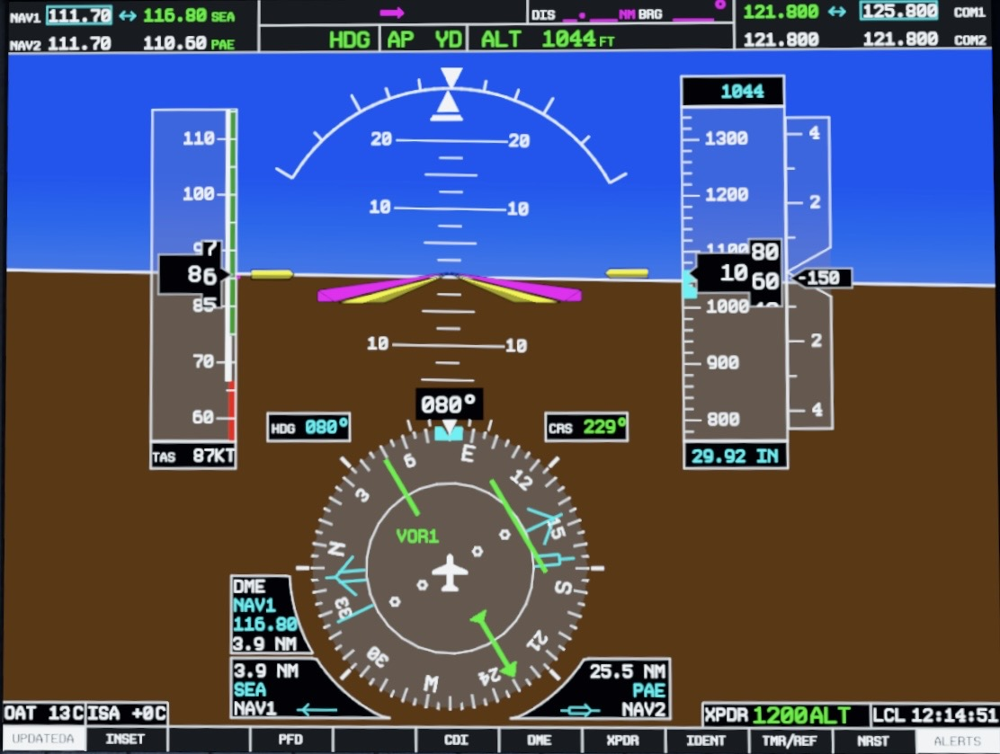

TO/FROM, reverse sensing y paso sobre la estación
Interpreta correctamente la relación entre curso y estación, evita indicaciones invertidas y reconoce cuándo la señal deja de ser confiable.
Una secuencia corta, aplicada y verificable
El módulo no se limita a definiciones: cada concepto termina en una decisión de cabina.
TO/FROM describe la relación del curso con la estación
Selecciona una posición y un curso. El instrumento te mostrará si ese curso, una vez centrado, lleva hacia la estación o se aleja de ella.
Radial y curso inbound no son lo mismo
El radial identifica la línea desde la estación. Para volarla inbound debes seleccionar su recíproco.
¿Qué curso seleccionarías para volar inbound?
Usa +180° cuando el radial es menor de 180° y −180° cuando es igual o mayor de 180°.
Reverse sensing aparece cuando la selección no coincide con el sentido de vuelo
En un CDI convencional, volar el recíproco del curso seleccionado hace que la aguja parezca pedir la corrección contraria.
Sensing normal
La orientación reduce la ambigüedad
Antes de interpretar TO/FROM en G1000
La fuente debe ser VOR1 o VOR2 en verde y la señal debe estar identificada y válida.

Fuente activa
VOR1 confirma que el HSI está recibiendo guiado VOR. El color ayuda, pero la etiqueta es la verificación principal.
LOC utiliza el mismo color, pero una lógica distinta
El localizador entrega guiado lateral de aproximación, no radiales. No uses TO/FROM para interpretarlo.

Sensing normal
Intercepta y sigue el localizador en el sentido publicado hacia la pista. La corrección normal se realiza hacia la indicación.
LOC1 verdeVerifica el modo del equipo
Con equipo convencional sin corrección BC, la aguja puede sentirse invertida. Confirma AFMS/POH y el procedimiento publicado.
No asumir TO/FROMStation passage: TO → zona inestable → FROM
Al pasar sobre el VOR, la información azimutal puede volverse momentáneamente ambigua. Mantén el rumbo y confirma la reversión completa.
Cuando la indicación no tiene sentido, detén la maniobra y verifica
El error más peligroso no es una aguja desviada; es interpretar una aguja que proviene de una fuente o selección equivocada.
La fuente activa sigue siendo GPS
- No interpretes el CDI como VOR.
- Selecciona VLOC hasta visualizar VOR1/VOR2 en verde.
- Confirma frecuencia, identificación, curso y validez.
1. CRS 090°, CDI centrado, TO
¿En qué radial está la aeronave?
2. CRS 225°, CDI centrado, FROM
¿En qué radial está la aeronave?
3. CDI oscila al pasar el VOR
¿Cuál es la acción correcta?
4. Fuente LOC1 verde
¿Qué representa?
Guía rápida para el instructor
Verificar: verbalización de fuente, curso, TO/FROM y validez antes de maniobrar.
Errores observables: gira sin confirmar fuente; confunde radial con curso; persigue el CDI sobre la estación; trata LOC como VOR; no identifica la radioayuda.
Call-out esperado: “VOR1 verde, estación identificada, CRS ___, TO/FROM ___, CDI ___, señal válida”.
Demuestra una lectura completa y segura
Aprobación: 80 %. Las preguntas de fuente y validez son críticas.
Completa la evaluación
El resultado aparecerá aquí.
Fuentes técnicas
FAA Pilot’s Handbook of Aeronautical Knowledge, capítulo de navegación.
FAA Aeronautical Information Manual, VOR y station passage.
FAA Instrument Procedures Handbook, localizer back course y reverse sensing.
Garmin G1000 Pilot’s Guide/Cockpit Reference Guide. La instalación, AFMS y POH aplicables prevalecen.
Las capturas de G1000 fueron suministradas para este proyecto de entrenamiento.